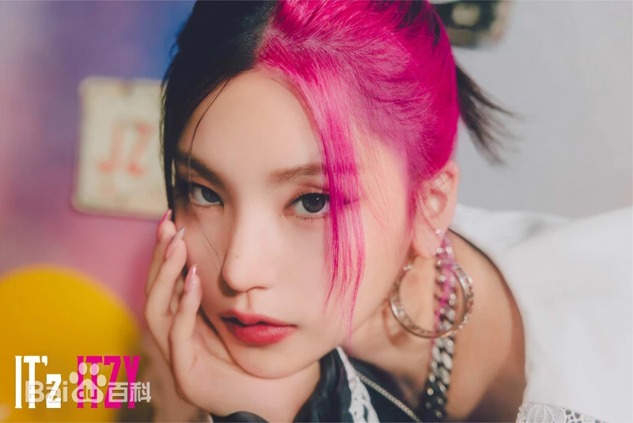

| 中文名 | 黄礼志 | 韩文名 | 예지 | 生日 | 2000-05-26 | 星座 | 双子座 | 队内担当 | ITZY队长、主舞、领唱 | 所属社 | JYP Entertainment |
|---|
黄礼志拥有非常抓人眼球的五官，眉眼锋利又精致，脸型流畅耐看，自带与生俱来的大佬气场。不笑的时候清冷高级，眼神极具杀伤力；笑起来又温柔甜美，亲和力满满。她的气质可盐可飒，既能驾驭高冷酷拽的女团风，也能撑起温柔乖巧的邻家感，整体气场在五代女团里非常突出

作为团队队长兼主舞，黄礼志的舞蹈功底非常扎实，节奏感、卡点能力、肢体控制力都堪称顶尖。跳舞线条干净利落，力度收放自如，每一个动作都干净不拖沓，舞台表情管理满分。唱功方面音色清亮有辨识度，音准稳定、气息扎实，唱跳全开麦也非常稳。不管是强势 Girl Crush 风格，还是温柔抒情曲风，都能完美消化，是标准的全能型爱豆。
作为队长，她责任心极强，成熟稳重，凡事都会先为团队和队员考虑，默默承担很多压力，很会照顾妹妹们，细心又体贴。私下里和舞台反差超大，私下安静温柔、内敛细腻，待人真诚谦逊，性格沉稳低调，不张扬不浮夸，做事认真踏实，对待舞台永远保持敬畏和努力。
她身上有一种自带的领导者气场，冷静、靠谱、有担当，让人很有安全感。舞台上气场全开霸气十足，私下温柔软糯反差感拉满。业务能力无可挑剔，人品性格又讨喜，是让人越了解越喜欢的类型。